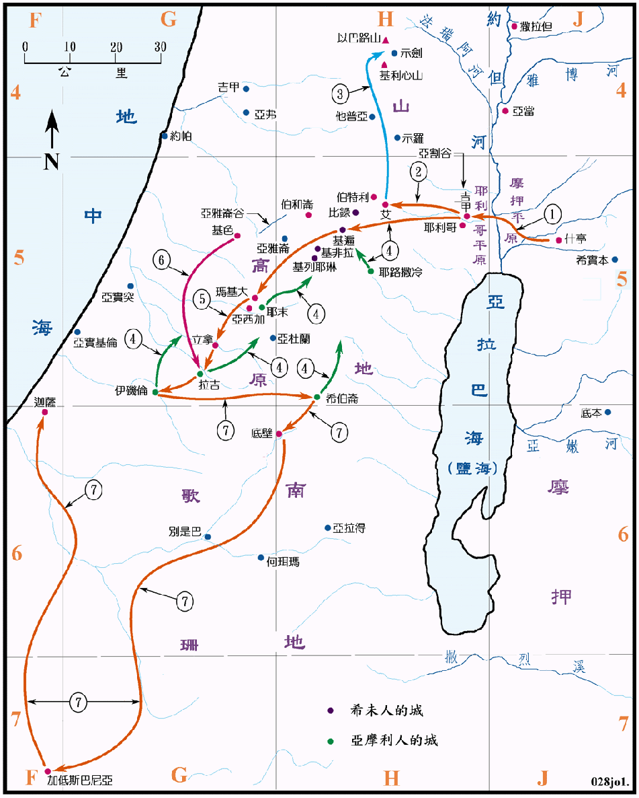

1406～1390BC

行动线说明
| 序号 | 圣经 | 说明 |
|---|---|---|
| 书1:1-4 | 应许之地。(参看申图01) | |
| 1 | 书2章 | 差遣两个探子往窥耶利哥。(书3章过约但河，然后在吉甲安营。) |
| 书6章 | 攻取耶利哥城。 | |
| 2 | 书7:2-8:29 | 攻打艾城。 |
| 3 | 书8:30-35 | 前往以巴路山和基利心山献祭，并录法於石。 |
| 书9章 | 与希未人立约。 | |
| 4 | 书10:1-27 | 亚摩利的五个王攻打基遍，被以色列人击败。 |
| 5 | 书10:28-32 | 攻取玛基大、立拿、拉吉。 |
| 6 | 书10:33 | 基色王来帮助拉吉，被约书亚击败。 |
| 7 | 书10:24-41 | 攻取伊矶伦、希伯仑、底壁、山地、南地、高原、山坡的人和那些地的诸王，又从加低斯巴尼亚攻击到迦萨、歌珊全地，直到基遍。 |
以色列人过约但河进迦南时是1046BC 年，此时正是埃及的法老亚门侯提三世 (1414～1378BC) 主政，他觉得不再需要靠远征来巩固国力，因而转向追求享乐，生活奢侈，并推展前所未有的建计划，因而逐渐松弛了对外的控制，有利於以色列人进攻迦南的征服行动。
接着的法老王是亚肯亚顿 (1378～1367BC)，他为摆脱底比斯城亚孟神祭司势力的威胁，而改信亚顿神，并以奉亚顿神为国教，在亚马拿城 Amarna 建都，因他太专心於亚顿神而忽略了政务，在军事方面，也忽视了迦南等的求助的呼声，使在亚洲的势力日减，迦南地的城邦有的公然反抗埃及的统治，有的则向埃及求援，也使得埃及无法有效的控制迦南和叙利亚，在国内的政局也岌岌可危。在亚马拿城所发现的三、四百块泥版，称为亚马拿书信集，是迦南诸王在 1400～1360BC 间外族入侵时求救的文书，可以证明以色列人进入迦南一段历史的真确性。
应许地中所说的旷野是指南地和其南之诸旷野，赫人全地可能是指迦南地，因赫人曾在数百年前统治过迦南，也可能指利巴嫩以北之地，因当时是赫人的地盘。
约但河在耶利哥城附近的一段，平日只有四、五十公尺宽，浅处可以涉水而过，但在以色列人过约但河的时候，正是收割的日子，河水涨过两岸，水流湍急，宽度有1公里以上，如非有大量的船只，是无法容数十万人在短时间内渡过的。
亚当城在耶利哥以北约有 27 公里，约但河谷在此变得十分狭窄而陡峭，根据正式的记载，在主后1266及1927年，河水曾两度被亚当城附近河岸陡壁坍塌下来的泥土所堵塞。所以约但河水忽然中断，是有可能的。
耶利哥是一个非常古老而且重要的地方，位约但河下游低地的尾端，背山面水，居高临下，形势险峻，扼守了往西南去耶路撒冷，往西则是去伯特利和艾城的两条隘道，沿河岸可通往北方，所以是一个军事和商业重要的据点。古城大约3公顷，建有9公尺高的城墙，城郊的土地肥沃，水源充沛，物产丰富，所以一直是一个富强的城邦。
艾城在耶利哥的西方约 18 公里，但两者的高差在1000公尺以上，窄狭崎岖的山路危险难行，但这是进入中部山地的惟一孔道。艾城也是一个很古老而重要的城邦，虽然不是很大，却一度相当的繁荣，由於曾被埃及占领，而且作为控制迦南的据点，所以有坚固的城墙和防卫的力量。
在以色列人攻下艾城之后，圣经虽未记载，但相信已经往北取得示剑城，并遵照摩西的遗命到以巴路山和基利心山上献祭。这两座山都是分别高耸在示剑城的南北，正在迦南地的中间，可说是代表了迦南地。其中以巴路山在北，是一座童山，可代表咒诅，而基利心山在南，山上林木茂盛，则是代表祝福。在主后 1983 年以色列的考古学家泽托尔，在以巴路的山顶上发现了约书亚所 的祭坛。
基遍是一座大城，武力强盛，在政治上是希未人等四个城的领袖，城区有4、5公顷，其位置在吉甲之西约27公里，但是中间有高山阻隔，比由吉甲到艾城更艰难，在夜间行军也是非常的危险。亚雅仑谷和伯和仑的下坡都是很长的谷道，是中央山地到沿海平原的三条通道中最重要的一条。
亚摩利的五个城邦，就是耶路撒冷、希伯仑、耶末、拉吉和伊矶伦，另外还有基色、玛基大、底壁、亚西加等都是。根据考古学家证实，那都是当时非常大，而且设防坚固的城池，可以想见当年以色列人所面临之险阻。如果与数年后，犹大支派所得城邑之名单相比，也可以知道圣经中所记载的，仅是一个大概，必定有许多的战役都省略未记。